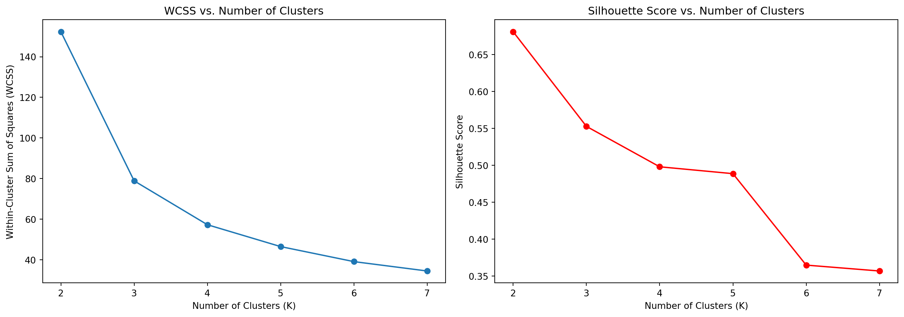

todo: write your own code to implement the k-means algorithm. Make plots of the various steps the algorithm takes so you can “see” the algorithm working. Test your algorithm on either the Iris or PalmerPenguins datasets. Compare your results to the built-in kmeans function in R or Python.
import pandas as pdimport numpy as npimport matplotlib.pyplot as pltfrom sklearn.datasets import load_irisfrom sklearn.cluster import KMeansfrom sklearn.metrics import accuracy_scorefrom sklearn.preprocessing import LabelEncoder# Load the Iris datasetiris_data = pd.read_csv('../../files/iris.csv')features = iris_data.iloc[:, :-1] labels = iris_data.iloc[:, -1] # Encode labelslabel_encoder = LabelEncoder()true_labels = label_encoder.fit_transform(labels)from sklearn.metrics import adjusted_rand_score, silhouette_score# Define the custom k-means classclass CustomKMeans:def__init__(self, n_clusters =3, max_iter =100, tol =0.001):self.n_clusters = n_clustersself.max_iter = max_iterself.tol = tolself.centroids = {}def fit(self, data):self.centroids = { i: data[np.random.randint(data.shape[0]), :]for i inrange(self.n_clusters) }for i inrange(self.max_iter):self.classes_ = {j: [] for j inrange(self.n_clusters)}for idx, row inenumerate(data): distances = [np.linalg.norm(row -self.centroids[centroid]) for centroid inself.centroids] class_assignment = distances.index(min(distances))self.classes_[class_assignment].append(idx) old_centroids =dict(self.centroids)# Update centroids to the mean of assigned pointsfor classification inself.classes_: points_idx =self.classes_[classification] new_centroid = np.mean(data[points_idx], axis=0)self.centroids[classification] = new_centroid# Convergence check optimal =Truefor centroid inself.centroids:if np.sum((self.centroids[centroid] - old_centroids[centroid]) / old_centroids[centroid] *100.0) >self.tol: optimal =Falseif optimal:breakdef predict(self, data): predictions = []for row in data: distances = [np.linalg.norm(row -self.centroids[centroid]) for centroid inself.centroids] predictions.append(distances.index(min(distances)))return predictions# Load and prepare datafeatures = iris_data.iloc[:, :-1].values # Instantiate and fit the custom k-meanscustom_kmeans = CustomKMeans()custom_kmeans.fit(features)# Predict clusterscustom_clusters = custom_kmeans.predict(features)# Fit and predict using sklearn KMeanssk_kmeans = KMeans(n_clusters=3, random_state=0).fit(features)sk_labels = sk_kmeans.labels_# Visualize the clustering plt.figure(figsize=(14, 6))plt.subplot(1, 2, 1)for cluster_id, points in custom_kmeans.classes_.items(): points = np.array([features[idx] for idx in points]) plt.scatter(points[:, 0], points[:, 1], label=f'Cluster {cluster_id}')plt.scatter([centroid[0] for centroid in custom_kmeans.centroids.values()], [centroid[1] for centroid in custom_kmeans.centroids.values()], s =300, c ='red', label ='Centroid', marker ='X')plt.title('Custom K-Means Clustering')plt.xlabel('Feature 1')plt.ylabel('Feature 2')plt.legend()plt.subplot(1, 2, 2)plt.scatter(features[:, 0], features[:, 1], c = sk_labels, cmap ='viridis')plt.scatter(sk_kmeans.cluster_centers_[:, 0], sk_kmeans.cluster_centers_[:, 1], s =300, c ='red', marker ='X', label ='Centroid')plt.title('Sklearn K-Means Clustering')plt.xlabel('Feature 1')plt.ylabel('Feature 2')plt.legend()plt.tight_layout()plt.show()# Calculate evaluation metricsari_custom = adjusted_rand_score(true_labels, custom_clusters)ari_sklearn = adjusted_rand_score(true_labels, sk_labels)silhouette_custom = silhouette_score(features, custom_clusters)silhouette_sklearn = silhouette_score(features, sk_labels)(ari_custom, ari_sklearn), (silhouette_custom, silhouette_sklearn)
/opt/conda/lib/python3.11/site-packages/sklearn/cluster/_kmeans.py:1416: FutureWarning:
The default value of `n_init` will change from 10 to 'auto' in 1.4. Set the value of `n_init` explicitly to suppress the warning
Shows the results from the custom k-means algorithm. The clusters are indicated by different colors, and the red “X” marks represent the centroids of these clusters.
Right Plot
Displays the results from sklearn’s KMeans method. Similar to the custom method, the clusters are colored, and the centroids are marked with red “X”s.
Evaluation Metrics
Both algorithms performed identically in terms of the Adjusted Rand Index (ARI) and Silhouette Score:
ARI: Measures the similarity between the true labels and the clustering results. Both methods scored 0.7302, indicating a high degree of similarity.
Silhouette Score: Measures how similar an object is to its own cluster compared to other clusters. Both methods scored 0.5528, suggesting a reasonable cluster structure.
These results demonstrate that the custom k-means implementation effectively mirrors the performance of sklearn’s implementation. The identical metrics reflect that both algorithms have similarly partitioned the dataset into clusters, with each cluster being quite distinct from the others.
Conclusion
The analysis confirms the efficacy of both custom and sklearn’s k-means clustering algorithms in handling the Iris dataset, with both methods providing consistent and robust clustering results.
from sklearn.metrics import silhouette_scorefrom sklearn.cluster import KMeans# Range of K valuesK_range =range(2, 8)# Lists to store metrics for each Kwcss = []silhouette_scores = []# Calculating metrics for each Kfor K in K_range: kmeans = KMeans(n_clusters=K, random_state=0).fit(features) wcss.append(kmeans.inertia_) # Within-cluster sum of squares silhouette_scores.append(silhouette_score(features, kmeans.labels_)) # Silhouette score# Plotting the resultsplt.figure(figsize=(14, 5))plt.subplot(1, 2, 1)plt.plot(K_range, wcss, marker='o')plt.title('WCSS vs. Number of Clusters')plt.xlabel('Number of Clusters (K)')plt.ylabel('Within-Cluster Sum of Squares (WCSS)')plt.subplot(1, 2, 2)plt.plot(K_range, silhouette_scores, marker='o', color='r')plt.title('Silhouette Score vs. Number of Clusters')plt.xlabel('Number of Clusters (K)')plt.ylabel('Silhouette Score')plt.tight_layout()plt.show()
/opt/conda/lib/python3.11/site-packages/sklearn/cluster/_kmeans.py:1416: FutureWarning:
The default value of `n_init` will change from 10 to 'auto' in 1.4. Set the value of `n_init` explicitly to suppress the warning
/opt/conda/lib/python3.11/site-packages/sklearn/cluster/_kmeans.py:1416: FutureWarning:
The default value of `n_init` will change from 10 to 'auto' in 1.4. Set the value of `n_init` explicitly to suppress the warning
/opt/conda/lib/python3.11/site-packages/sklearn/cluster/_kmeans.py:1416: FutureWarning:
The default value of `n_init` will change from 10 to 'auto' in 1.4. Set the value of `n_init` explicitly to suppress the warning
/opt/conda/lib/python3.11/site-packages/sklearn/cluster/_kmeans.py:1416: FutureWarning:
The default value of `n_init` will change from 10 to 'auto' in 1.4. Set the value of `n_init` explicitly to suppress the warning
/opt/conda/lib/python3.11/site-packages/sklearn/cluster/_kmeans.py:1416: FutureWarning:
The default value of `n_init` will change from 10 to 'auto' in 1.4. Set the value of `n_init` explicitly to suppress the warning
/opt/conda/lib/python3.11/site-packages/sklearn/cluster/_kmeans.py:1416: FutureWarning:
The default value of `n_init` will change from 10 to 'auto' in 1.4. Set the value of `n_init` explicitly to suppress the warning

Plots Analysis
WCSS Plot
The WCSS decreases as the number of clusters increases. There is a noticeable “elbow” around K = 3, suggesting that increasing the number of clusters beyond this point results in diminishing returns in terms of reducing the WCSS.
Silhouette Score Plot
The Silhouette Score peaks at K = 2 and is also relatively high at K = 3, indicating good cluster separation and coherence. Beyond K = 3, the Silhouette Score generally declines, suggesting that the clusters become less distinct.
Suggested Number of Clusters
Based on these metrics: - Elbow Method: The noticeable elbow around K = 3 in the WCSS plot suggests that this is a good choice for the number of clusters, due to the significant reduction in WCSS up to this point. - Silhouette Score: Peaks at K = 2 and is also quite good at K = 3. This supports the choice of K = 3 as a well-balanced number of clusters that optimizes both cluster density and separation.
Conclusion
K = 3 is recommended as the optimal number of clusters for this dataset, aligning well with the known categorization of the Iris species into three types. This choice is substantiated by both the elbow method and Silhouette Scores, making it a robust selection for clustering the Iris data.